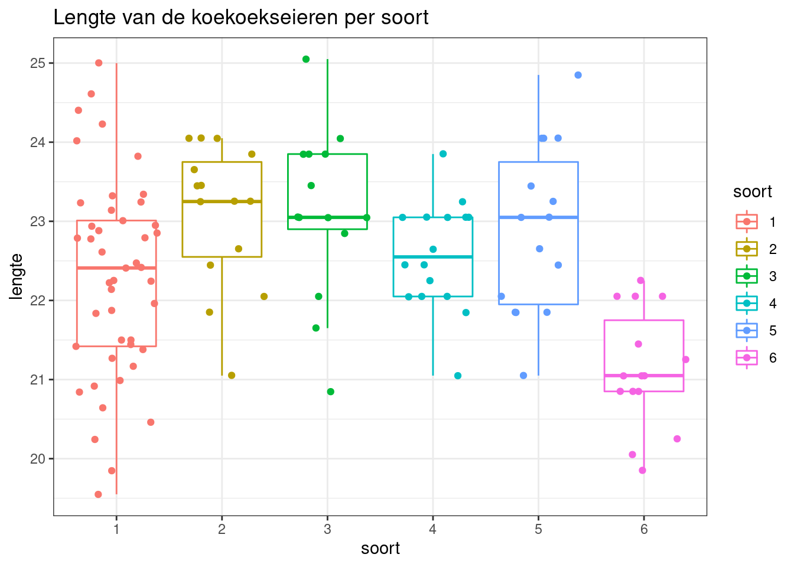
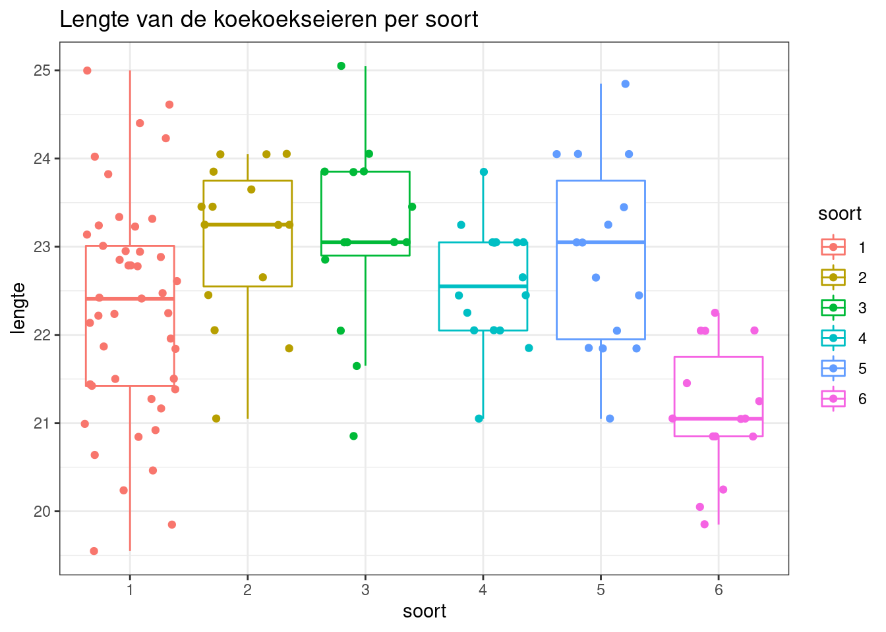
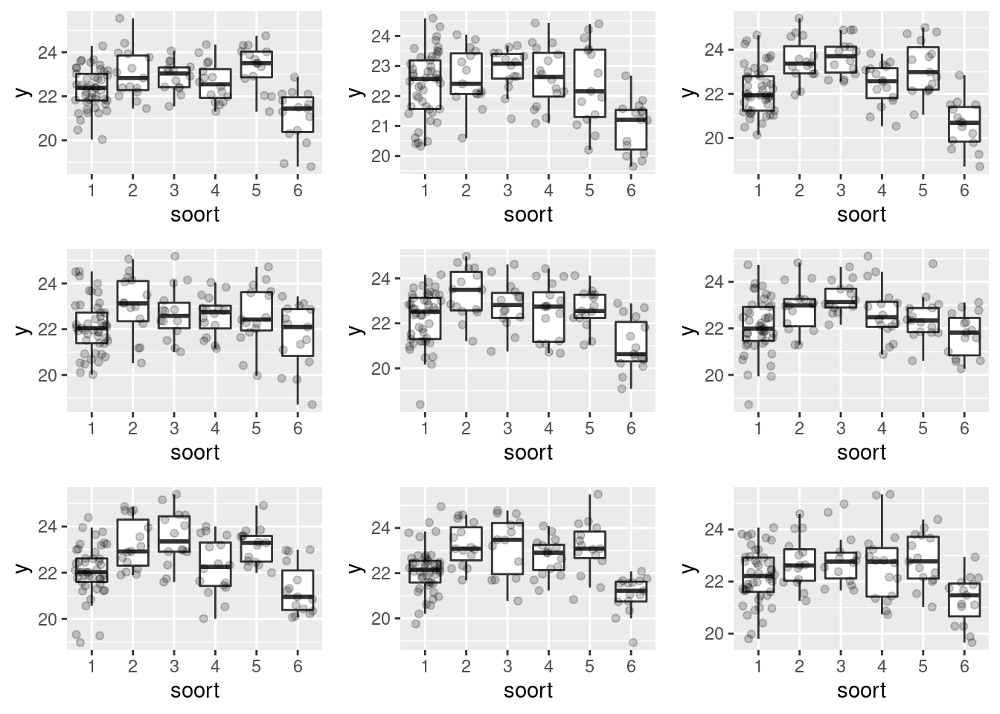
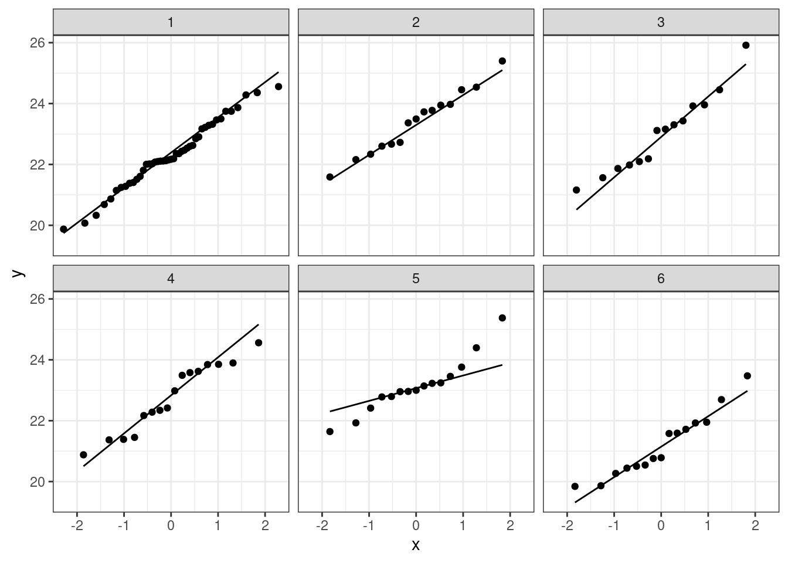
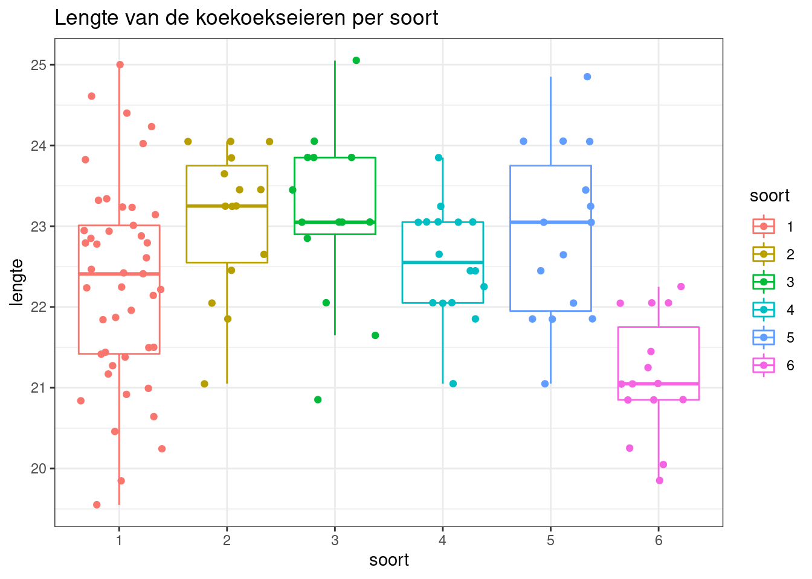

Practicum 5: Anova
Koen Van den Berge en Lieven Clement
statOmics, Ghent University (https://statomics.github.io)

1 De koekoek dataset
Het is bekend dat de koekoek niet zelf een nest bouwt maar zijn eieren legt in de nesten van andere vogels. Sinds 1892 weet men reeds dat het soort koekoekseieren eigen is aan de locatie waar ze gevonden worden. Een studie in 1940 toonde aan dat de koekoeken elk jaar terugkeren naar hetzelfde grondgebied en eieren leggen in de nesten van welbepaalde “pleegouder”-vogels. Bovendien paren koekoeken enkel binnen hun grondgebied. Op die manier zijn geografische subsoorten ontwikkeld, elk met een dominante pleegouder-soort. Hierdoor kon een specialisatie optreden van de koekoek aan de pleegouder-soort via natuurlijke selectie, zodat de koekoekseieren een hogere kans kregen om geadopteerd te worden door de pleegouder-soort.
De dataset koekoek.txt bevat de lengte (variabele
lengte) van de koekoekseieren (in mm) van willekeurig
gekozen geparasiteerde nesten. In totaal bevat de dataset 120
observaties en voor elk ei is aangegeven van welke vogelsoort (variabele
soort) het nest is. De codering voor soort is als
volgt:
soort=1: graspiepersoort=2: boompiepersoort=3: heggemussoort=4: roodborstjesoort=5: witte kwikstaartsoort=6: winterkoning
In deze analyse zullen we nagaan of de pleegouder-soort een invloed heeft op de gemiddelde lengte van de koekoekseieren.
2 Libraries laden
library(ggplot2)
library(dplyr)##
## Attaching package: 'dplyr'## The following objects are masked from 'package:stats':
##
## filter, lag## The following objects are masked from 'package:base':
##
## intersect, setdiff, setequal, union#install.packages("tidyr")
library(tidyr)
#install.packages("multcomp")
library(multcomp)## Loading required package: mvtnorm## Loading required package: survival## Loading required package: TH.data## Loading required package: MASS##
## Attaching package: 'MASS'## The following object is masked from 'package:dplyr':
##
## select##
## Attaching package: 'TH.data'## The following object is masked from 'package:MASS':
##
## geyser3 Dataset koekoek.txt inlezen
koekoek<-read.table("https://raw.githubusercontent.com/statOmics/statistiekBasisCursusData/master/practicum5/koekoek.txt",header=TRUE)
head(koekoek)4 Data exploratie
4.1 Hoeveel observaties zijn er voor elke soort?
Tel het aantal observaties per soort en sla het resultaat op in
count. Maak een barplot voor de variabele
soort.
count <- koekoek %>% count(soort)
countkoekoek %>% ggplot(aes(x = soort)) + geom_bar(fill = "steelblue")4.2 Data visualisatie
Genereer een boxplot van de lengte van de koekoekseieren voor elk van de 6 vogelsoorten. Plot ook de individuele observaties.
koekoek$soort <- as.factor(koekoek$soort)
boxplot <- ggplot(data=koekoek,aes(x=soort, y=lengte, col=soort)) +
geom_boxplot(outlier.shape = NA) +
geom_jitter() +
theme_bw() +
ggtitle("Lengte van de koekoekseieren per soort")
boxplot
5 Statististische toets
Welke test kan men uitvoeren om de gemiddelde lengte simultaan te vergelijken tussen alle soorten?
In vorige lessen zagen we enkel de two-sample t-test om twee gemiddelden met elkaar vergelijken. We hebben echter ook reeds gezien dat de two-sample t-test een specifieke versie is van een lineair model, namelijk van een lineair model waarbij de covariaat een categorische variabele \(X\) is met \(2\) levels, i.e. \[ E(Y_i) = \beta_0 + \beta_1 X_i \]
Bijvoorbeeld, indien \(Y_i\) de lengte van persoon \(i\) voorstelt en \(X_i\) het geslacht van die persoon waarbij \(X_i=0\) indien persoon \(i\) een vrouw is, en \(X_i=1\) indien niet. In dat geval, stelt \(\beta_0\) de gemiddelde lengte voor vrouwen voor, en \(\beta_1\) staat voor het verschil in gemiddelde lengte tussen vrouwen en mannen. De gemiddelde lengte voor een man kan men dan bekomen door \(E(Y_{male}) = \beta_0 + \beta_1\). Men kan dit ook schrijven als \[ E(Y | female) = E(Y|X=0) = \beta_0\] \[ E(Y | male) = E(Y|X=1) = \beta_0 + \beta_1\]
Dit lineair model kan echter ook makkelijk veralgemeend worden naar factoren met meerdere levels. Men kan inderdaad meerdere dummy variabelen invoeren (1 minder dan het aantal toetsen). Voor ons voorbeeld zullen we 5 dummyvariabelen nodig hebben: \(X_2\), \(X_3\), \(X_4\), \(X_5\) en \(X_6\). De eerste soort is dan de referentiegroep (alle dummies \(X_2 = X_3 = X_4 = X_5 = X_6 =0\)).
Er bestaat een manier waarbij we alle levels simultaan kunnen testen, men zal namelijk testen of de gehele factor variabele een invloed heeft op de respons. In de context van ons voorbeeld, zal men kunnen testen of de pleegouder-soort uberhaupt een effect heeft op de gemiddelde lengte van koekoekseieren. Zo’n een test heet een one-way ANOVA. Men noemt de test ‘one-way’ omdat het de associatie bestudeert tussen de response en 1 factor, met andere woorden het model bevat geen meerdere factoren.
5.1 Nul- en alternatieve hypothese voor de toets
Stel dat \(\mu_1\) de gemiddelde
lengte van koekoekseieren voor graspiepers (soort=1)
voorstelt, en idem voor \(\mu_2 , \ldots ,
\mu_6\). De nul- en alternatieve hypothese voor een ANOVA kan men
dan voorstellen als
\(H_0\): \(\mu_1=\mu_2=\mu_3=\mu_4=\mu_5=\mu_6\)
\(H_A\): Voor minstens één \(i \ne j\) is \(\mu_i \neq \mu_j\)
De nulhypothese stelt dus dat de gemiddelde lengte van koekoekseiren niet afhangt van de pleegouder-soort: er is geen systematisch verschil in gemiddelde lengte van eieren tussen verschillende pleegouder-soorten. De alternatieve hypothese stelt dat de gemiddelde lengte van koekoekseieren verschilt tussen minstens twee pleegouder-soorten. Merk op dat men bij het verwerpen van de nulhypothese niet weet tussen welke soorten er een verschil is!
5.1.1 Fit het model voor de analyse
We fitten een lineair model met als respons variabele de lengte van de eieren en als predictor de soort. Merk op dat het belangrijk is om soort te definiëren als een factor, wat al in orde werd gebracht bij het genereren van de boxplots. R zal dan automatisch het vereiste aantal dummy-variabelen aanmaken.
m <- lm(lengte~soort, data = koekoek)
summary(m)##
## Call:
## lm(formula = lengte ~ soort, data = koekoek)
##
## Residuals:
## Min 1Q Median 3Q Max
## -2.7376 -0.7406 0.0975 0.6869 2.7124
##
## Coefficients:
## Estimate Std. Error t value Pr(>|t|)
## (Intercept) 22.2876 0.1571 141.862 < 2e-16 ***
## soort2 0.8024 0.3142 2.554 0.011975 *
## soort3 0.8339 0.3225 2.585 0.010985 *
## soort4 0.2874 0.3068 0.937 0.350725
## soort5 0.6158 0.3142 1.960 0.052467 .
## soort6 -1.1576 0.3142 -3.684 0.000353 ***
## ---
## Signif. codes: 0 '***' 0.001 '**' 0.01 '*' 0.05 '.' 0.1 ' ' 1
##
## Residual standard error: 1.054 on 114 degrees of freedom
## Multiple R-squared: 0.254, Adjusted R-squared: 0.2213
## F-statistic: 7.762 on 5 and 114 DF, p-value: 2.576e-06De output van het model suggereert dat er inderdaad verschillen lijken te zijn in gemiddelde lengte tussen de pleegoudersoorten. Merk op dat in de standaard output op basis van dit model de p-waarden echter niet aangepast worden voor meervoudig toetsen. Ook laat het model enkel toe om een toets uit te voeren voor de vergelijking tussen soorten 2-6 en de referentie soort = 1 (dus niet onderling tussen soorten 2-6).
Enkel de p-waarde van de globale F-toets kan voor een one-way ANOVA analyse worden gebruikt. Het is de p-waarde die men bekomt wanneer men ons model vergelijkt met een model met enkel het intercept. Het is dus een toets voor de omnibus hypothese dat alle hellingparameters (\(\beta_1 - \beta_5\)) gelijk zijn aan nul.
5.2 Ga de assumpties voor een ANOVA na.
Zoals beschreven in de cursus, veronderstelt ANOVA een locatie-shift model.
Dit wil zeggen dat de vorm van de distributie in elke groep gelijk is en dat we veronderstellen dat er enkel shifts in gemiddelde kunnen optreden tussen de groepen.
In het bijzonder nemen we de aanname dat de data van elke groep een normale verdeling volgen. Dit impliceert dat de data in
- elke groep normaal verdeeld moeten zijn en
- dat de varianties van de data van alle groepen gelijk is.
Bovendien neemt de test nog aan dat alle observaties onafhankelijk zijn van elkaar.
Deze laatste assumptie lijkt te zijn voldaan; de nesten werden willekeurig gekozen.
De eerste twee assumpties kunnen we nagaan indien er niet te veel groepen zijn. Hier hebben we zes groepen en is het checken van assumpties binnen elke groep haalbaar.
Voor het nagaan van homoscedasticiteit werken we met boxplots:
boxplot
We doen dit door de interquartiel ranges (boxbreedtes van de boxplots) met elkaar te vergelijken.
De data lijken gelijke varianties te hebben, en deze assumptie lijkt alvast niet geschonden.
Het is echter niet altijd eenvoudig om te beoordelen of de varianties sterk van mekaar verschillen of niet. Om een beter idee te krijgen, kunnen we eens een aantal boxplots simuleren met dezelfde steekproefgrootte als in de dataset en in de veronderstelling dat de varianties gelijk zijn.
set.seed(52)
par(mfrow=c(3,3), mar=c(3,2,1,1))
sd1<- m %>% sigma
means<- koekoek %>% group_by(soort) %>% summarise(m=mean(lengte))
nobs <-koekoek %>% count(soort)
plotList <- lapply(1:9, function(x,means,sd,nobs)
{
data.frame(y = rnorm(
sum(nobs$n),
mean=rep(means$m,times=nobs$n),
sd=sd),
soort = rep(nobs$soort,times=nobs$n)
) %>%
ggplot(aes(soort,y)) +
geom_boxplot(outlier.shape = NA) +
geom_jitter(alpha=.2)
}, means=means,nobs=nobs,sd=sd1)
library(gridExtra)##
## Attaching package: 'gridExtra'## The following object is masked from 'package:dplyr':
##
## combinedo.call("grid.arrange",c(plotList,nrow=3,ncol=3))
We zien dat de data die gesimuleerd wordt onder de model veronderstellingen ook gelijkaardige variabiliteit in de boxbreedtes vertonen door toeval.
We gaan vervolgens de assumptie na dat dat data binnen elke groep normaal verdeeld zijn:
# Maak QQ-plot voor de lengte van de koekoekseieren per soort
plot_qq <- koekoek %>% ggplot(aes(sample = lengte)) +
geom_qq() + # qq-punten
geom_qq_line() + # qq-lijn
theme_bw() +
facet_wrap(~soort)
plot_qqBij de derde soort suggereert de QQ plot wat afwijkingen van normaliteit. We stelden eerder al vast dat soort drie slechts 14 observaties bevat. We kunnen opnieuw data simuleren waarvoor alle aannames voldaan zijn. De afwijkingen die we in onze qqplot zien lijken niet zeer uitzonderlijk te zijn. Ook in de gesimuleerde data zijn we vergelijkbare afwijkingen in sommige steekproeven.
plotList <- lapply(1:9, function(x,means,sd,nobs)
{
data.frame(y = rnorm(
sum(nobs$n),
mean=rep(means$m,times=nobs$n),
sd=sd),
soort = rep(nobs$soort,times=nobs$n)
) %>%
ggplot(aes(sample=y)) +
geom_qq() + # qq-punten
geom_qq_line() + # qq-lijn
theme_bw() +
facet_wrap(~soort)
}, means=means,nobs=nobs,sd=sd1)
plotList## [[1]]##
## [[2]]##
## [[3]]##
## [[4]]##
## [[5]]##
## [[6]]
##
## [[7]]##
## [[8]]##
## [[9]]
De data van elke groep lijken dus een normale verdeling te volgen.
Indien men veel groepen moet vergelijken, kan het efficiënter zijn om slechts één plot te moeten beoordelen. In dat geval kan men ervoor kiezen om niet voor elke groep apart een QQ-plot te maken, maar kan men de residuen van het lineair model checken. Merk op dat men dan checkt voor een normale distributie van alle residuen van de respons variabele rond hun groepsgemiddelde, en dus niet voor een normale distributie binnen elke groep.
par(mfrow=c(2,2))
plot(m) # Enkel figuur rechts boven is relevantpar(mfrow=c(1,1))De QQ-plot vertoont geen systematische afwijkingen van een normale distributie.
Merk op dat je in principe de assumptie van homoscedasticiteit ook op basis van de residuplot linksboven en linksonder zou kunnen checken: elke ‘kolom’ van punten stelt een soort voor (1 soort heeft 1 geschat gemiddelde) en de punten stellen de residuen voor ten opzichte van hun groepsgemiddelde. Men kan deze plot dus ook gebruiken om te kijken of er groepen (soorten) zijn die een verschillende variantie hebben ten opzichte van andere groepen. Hierbij is het voor dit voorbeeld wel van belang om rekening te houden met het grote verschillen in steekproefgrootte tussen de soorten.
5.3 Interpreteer de resultaten van de ANOVA analyse
We voeren de ANOVA test uit aan de hand van het lineair regressiemodel. In principe testen we dan volgende nulhypothese
\[ H_0: \beta_1 = \beta_2 = \beta_3 = \beta_4 = \beta_5 = 0 \]
met de alternatieve hypothese dat minstens één regressieparameters verschillend is van nul.
Merk op dat deze nulhypothese evenwaardig is aan de nulhypothese die we eerder formuleerden. Als alle regressieparameters \(\beta_1, \dots, \beta_5 = 0\), betekent dit dat er geen verschil is tussen de 6 groepsgemiddelde lengtes. Dat ziet men ook eenvoudig in de output van de verschillende groepsgemiddeldes die worden gemodelleerd met het model.
ExploreModelMatrix::VisualizeDesign(koekoek,~soort)$plotlist## [[1]]anova(m)De p-waarde van deze ANOVA test is bijzonder klein. We besluiten dat we de nulhypothese kunnen verwerpen (\(p<<0.001\)) en dat de gemiddelde lengte van koekoekseieren verschilt tussen minstens twee van de bestudeerde pleegoudersoorten op het 5% significantieniveau.
Aan de hand van dit resultaat weten we echter niet tussen welke soorten er een verschil optreedt, en hiervoor zal men een post-hoc analyse moeten uitvoeren. Een post-hoc analyse voert men enkel uit indien de ANOVA test significant was, en bestaat erin om paarsgewijze vergelijkingen uit te voeren tussen de groepen.
5.3.1 Post-hoc analyse
De post-hoc analyse bestaat eruit om paarsgewijze testen uit te voeren. Indien men over \(k\) groepen beschikt is het totaal aantal paarsgewijze vergelijkingen gelijk aan \(k(k-1)/2\). In dit voorbeeld is \(k=6\) waardoor we \(15\) paarsgewijze vergelijkingen zullen uitvoeren. We kunnen echter niet elke test op het 5% significantieniveau uitvoeren vanwege het meervoudig toetsen probleem. Inderdaad, indien men 15 vergelijkingen zou doen, elk op het 5% significantieniveau, dan is de kans dat we minstens één nulhypothese ten onrechte zouden verwerpen veel hoger dan het significantieniveau (5%) die we voor elke individuele test hebben gebruikt. Als alle pairsgewijze vergelijkingen onafhankelijk zouden zijn van elkaar (wat ze niet zijn omdat een heel aantal vergelijkingen dezelfde groepen delen) zouden we die kans kunnen schatten als
alpha <- 0.05
nComparisons <- 15
1-(1-alpha)^nComparisons## [1] 0.5367088Een conservatieve bovengrens op die kans wordt gegeven door Bonferroni:
alpha * nComparisons## [1] 0.75Dus indien we elke test op het 5% significantieniveau zouden uitvoeren en als alle nulhypotheses waar zouden zijn, is het heel waarschijnlijk dat we minstens één nulhypothese ten onrechte zouden verwerpen! Om deze kans globaal gezien (dit is, over alle paarsgewijze vergelijkingen) op 5% te houden, moeten we corrigeren voor meervoudig testen.
In R kunnen we de post-hoc analyse uitvoeren met behulp
van het multcomp package aan de hand van de
glht functie. We specifiëren hier in het
linfct argument dat we multiple comparisons
(mcp) willen uitvoeren waarbij we alle paarsgewijze
vergelijkingen voor de soort variabele willen testen aan de
hand van de "Tukey" methode. Het resultaat van deze test
slaan we vervolgens op in het object mcp, waarop we een
summary opvragen van dat object. Het multcomp
package zorgt ervoor dat deze p-waarden automatisch gecorrigeerd worden
voor meervoudig toetsen.
library(multcomp)
mcp <- glht(m,linfct=mcp(soort="Tukey"))
summary(mcp)##
## Simultaneous Tests for General Linear Hypotheses
##
## Multiple Comparisons of Means: Tukey Contrasts
##
##
## Fit: lm(formula = lengte ~ soort, data = koekoek)
##
## Linear Hypotheses:
## Estimate Std. Error t value Pr(>|t|)
## 2 - 1 == 0 0.80244 0.31421 2.554 0.11453
## 3 - 1 == 0 0.83387 0.32252 2.585 0.10648
## 4 - 1 == 0 0.28744 0.30676 0.937 0.93405
## 5 - 1 == 0 0.61578 0.31421 1.960 0.36564
## 6 - 1 == 0 -1.15756 0.31421 -3.684 0.00456 **
## 3 - 2 == 0 0.03143 0.39164 0.080 1.00000
## 4 - 2 == 0 -0.51500 0.37877 -1.360 0.74532
## 5 - 2 == 0 -0.18667 0.38483 -0.485 0.99648
## 6 - 2 == 0 -1.96000 0.38483 -5.093 < 0.001 ***
## 4 - 3 == 0 -0.54643 0.38569 -1.417 0.71100
## 5 - 3 == 0 -0.21810 0.39164 -0.557 0.99327
## 6 - 3 == 0 -1.99143 0.39164 -5.085 < 0.001 ***
## 5 - 4 == 0 0.32833 0.37877 0.867 0.95209
## 6 - 4 == 0 -1.44500 0.37877 -3.815 0.00286 **
## 6 - 5 == 0 -1.77333 0.38483 -4.608 < 0.001 ***
## ---
## Signif. codes: 0 '***' 0.001 '**' 0.01 '*' 0.05 '.' 0.1 ' ' 1
## (Adjusted p values reported -- single-step method)In de output hiervan zien we de verschillende paarsgewijze
vergelijkingen die werden uitvoerd. Elke vergelijking noemen we ook een
contrast. Contrast 2 - 1 == 0 duidt erop dat voor dit
contrast wordt getest of het verschil in gemiddelde lengte voor soort
2 en dat voor soort 1 gelijk is aan nul tegen
het alternatief dat beide gemiddeldes verschillend zijn. In de tweede
kolom wordt het verschil in gemiddelden weergegeven, met hun standaard
error en teststatistiek in de respectievelijk derde en vierde kolom. De
laatste kolom geeft aangepaste p-waarden weer op een globaal
significantieniveau van 5%. Aan de hand van de aangepaste p-waarden zien
we dat de gemiddelde lengte van soort 6 (winterkoning) verschilt van
alle andere soorten. De effectgrootte is voor alle soorten negatief,
hetgeen impliceert dat de gemiddelde lengte van koekoekseieren lager is
in nesten van winterkoning in vergelijking met andere soorten.
Voor de rapportering zullen we ook betrouwbaarheidsintervallen voor
elke paarsgewijze vergelijking opvragen. We kunnen deze ook makkelijk
grafisch voorstellen aan de hand van de plot functie die op
een glht object kan toegepast worden. De
betrouwbaarheidsintervallen worden opnieuw gecorrigeerd voor meervoudig
testen.
confint(mcp)##
## Simultaneous Confidence Intervals
##
## Multiple Comparisons of Means: Tukey Contrasts
##
##
## Fit: lm(formula = lengte ~ soort, data = koekoek)
##
## Quantile = 2.8894
## 95% family-wise confidence level
##
##
## Linear Hypotheses:
## Estimate lwr upr
## 2 - 1 == 0 0.80244 -0.10543 1.71032
## 3 - 1 == 0 0.83387 -0.09800 1.76575
## 4 - 1 == 0 0.28744 -0.59890 1.17379
## 5 - 1 == 0 0.61578 -0.29210 1.52365
## 6 - 1 == 0 -1.15756 -2.06543 -0.24968
## 3 - 2 == 0 0.03143 -1.10017 1.16303
## 4 - 2 == 0 -0.51500 -1.60941 0.57941
## 5 - 2 == 0 -0.18667 -1.29858 0.92525
## 6 - 2 == 0 -1.96000 -3.07192 -0.84808
## 4 - 3 == 0 -0.54643 -1.66082 0.56797
## 5 - 3 == 0 -0.21810 -1.34969 0.91350
## 6 - 3 == 0 -1.99143 -3.12303 -0.85983
## 5 - 4 == 0 0.32833 -0.76607 1.42274
## 6 - 4 == 0 -1.44500 -2.53941 -0.35059
## 6 - 5 == 0 -1.77333 -2.88525 -0.66142plot(mcp)Men kan de bekomen resultaten van de test ook interpreteren a.d.h.v. ruwe data:
boxplot
Waar we eveneens evidentie zien dat de eieren gemiddeld kleiner zijn voor nesten van winterkoninkjes i.v.m. andere soorten.
6 Conclusie
winterId <- grep(rownames(confint(mcp)$confint),pattern="6")Er is een extreem significant effect van de pleegoudersoort op de gemiddelde lengte van koekoekseieren (one-way ANOVA test, \(p<<0.001\)). Op een globaal 5% significantieniveau is de gemiddelde lengte van koekoekseieren in nesten van winterkoning kleiner dan deze in nesten van alle andere bestudeerde soorten: graspieper (Tukey test, verschil=-1.16, aangepaste p-waarde = 0.005, 95% BI: [-2.07, -0.25]), boompieper (Tukey test, verschil=-1.96, aangepaste p-waarde < 0.001, 95% BI: [-3.07, -0.85]), heggenmus (Tukey test, verschil=-1.99, aangepaste p-waarde < 0.001, 95% BI: [-3.12, -0.86]), roodborstje (Tukey test, verschil=-1.44, aangepaste p-waarde = 0.003, 95% BI: [-2.54, -0.35]) en witte kwikstaart (Tukey test, verschil=-1.77, aangepaste p-waarde < 0.001, 95% BI: [-2.88, -0.66]).
De verschillen in gemiddelde lengte van de koekoekseieren tussen de overige soorten zijn niet significant.